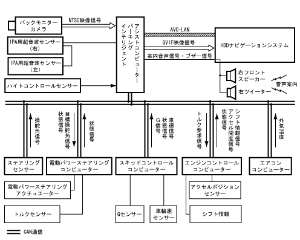

| Intelligent Parking Assist System Control |
| ● |
The intelligent parking assist computer synthesizes the image from the rear view monitor camera installed at the rear of the vehicle with images of each guide line calculated and predicted based on vehicle status signals input via CAN communication from the steering sensor, electric power steering computer, skid control computer, engine control computer, etc., and outputs it to the HDD navigation system, while outputting control signals to each computer to perform each intelligent parking assist control.
|
| ● |
The HDD navigation system receives signals from the intelligent parking assist computer and displays the intelligent parking assist screen under control of the built-in main computer.
|
| ● |
IPA*
Space recognition is performed by the ultrasonic sensors, the space in which the vehicle can be parked is calculated and the target parking position is set within that space, reducing the effort of the driver to adjust the target parking position.
|
| HINT |
| * |
IPA stands for Intelligent Parking Assist.
|
 |
 Parking Space Detection by IPA Ultrasonic Sensors Parking Space Detection by IPA Ultrasonic Sensors
|
 Related Parts Related Parts
|